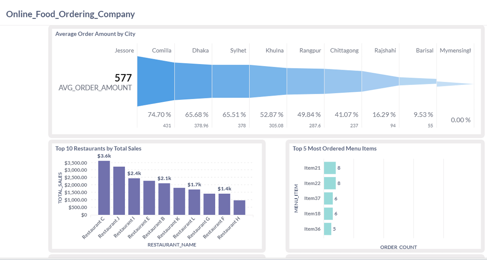
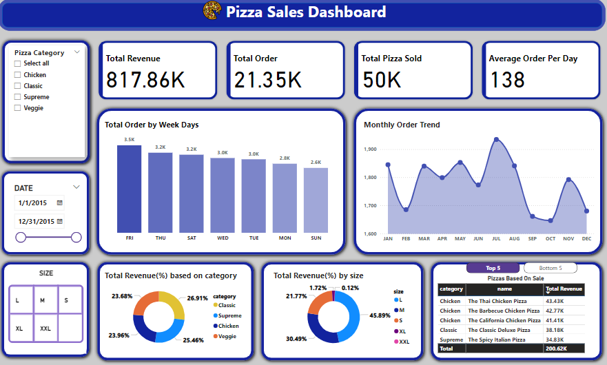
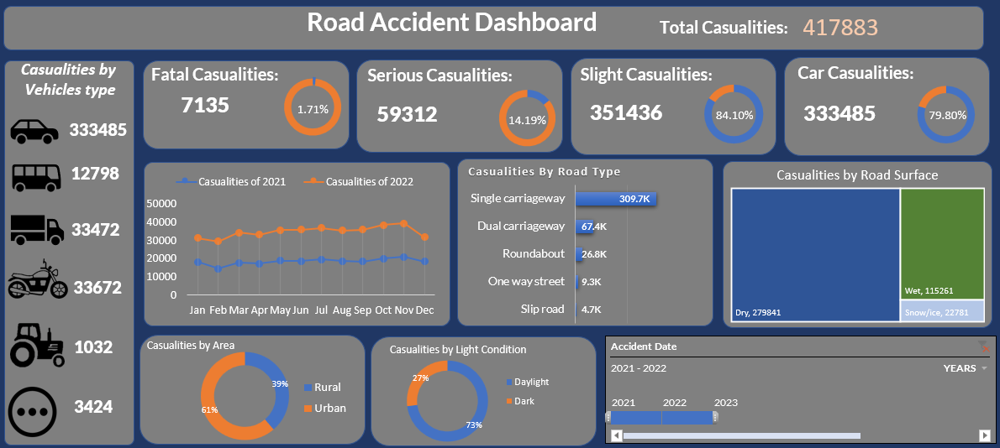

The project was conducted using Python, encompassing essential stages such as data cleaning, exploration, and analysis. Initially, the dataset underwent rigorous cleaning to ensure data integrity. The distribution of 'Close' prices over time was visualized to identify trends and outliers. Transitioning into time series analysis, rolling window calculations and moving averages were employed to uncover underlying patterns in stock price movements. Furthermore, volatility assessment scrutinized daily price changes to discern significant fluctuations. Additionally, correlations between trading volume and volatility were investigated, employing correlation matrices and heatmaps for visual representation. This project underscores the adeptness in leveraging Python for intricate financial analysis, offering valuable insights crucial for navigating the dynamic stock market landscape.

In this project, the task of analyzing and optimizing a database of an Online Food Ordering Company was undertaken to enhance efficiency and decision-making processes. The primary objectives were to extract meaningful insights, identify areas for improvement, and optimize database performance. The dashboard provides key insights and visualizations to help stakeholders understand various aspects of the business, including user activity, restaurant performance, order trends, etc.

This Analysis and dashboard presntation provides comprehensive insights into pizza sales performance, including some mportant KPI :Total Revenue, peak and low sales days, monthly trends, top and lowest categories, and size preferences. Developed using SQL for data extraction and Power BI for visualization, it highlights key insights and actionable strategies to optimize sales and marketing effort.

The project focuses on analyzing and visualizing road accident data to identify patterns, trends, and insights that can contribute to road safety measures and policy decisions. Leveraging a comprehensive dataset on road accidents, I conducted data cleaning, processing, analysis, visualization, and dashboard building to provide stakeholders with actionable insights and key performance indicators (KPIs) related to road safety.